Spatiotemporal analysis with graphs
Lecture 4 · Jhony H. Giraldo · Télécom Paris, Institut Polytechnique de Paris
So far the data has been static: one signal on one graph. This note adds time. A sensor network reports a temperature every ten minutes, a road network reports a speed every five, a global monitoring system reports a case count every day. The graph describes where; the time series describes when; and the two are not independent.
Two problems organize the note. Reconstruction: values are missing, and we want them back. Forecasting: we have the past, and we want the future. Both are solved twice — once by writing an optimization problem, once by training a network — and comparing the two is the point of the lecture. Along the way we need one tool we have so far avoided: the spectral view of a graph.
1 Learning objectives
After studying this note, you should be able to:
- define a time-varying graph signal and the temporal difference operator;
- define the graph Fourier transform and interpret its coefficients as graph frequencies;
- express a graph filter in the spectral domain and state the cost of doing so;
- write the ChebConv recursion and explain why it avoids the eigendecomposition;
- formulate reconstruction as a smoothness-regularized optimization problem and solve it by gradient descent;
- formulate forecasting as auto-regressive modeling on a graph, and extend it to multiple horizons.
2 Time-varying graph signals
Definition 1 — Time-varying graph signal
Let \(\mathcal{G}\) have \(N\) nodes. A time-varying graph signal is
\[ \mathbf{X}=[\mathbf{x}_1,\mathbf{x}_2,\ldots,\mathbf{x}_M]\in\mathbb{R}^{N\times M}, \]
where \(\mathbf{x}_s\in\mathbb{R}^{N}\) is a graph signal on \(\mathcal{G}\) at time \(s\). Row \(i\) is the time series observed at node \(i\); column \(s\) is a snapshot of the whole network.
Definition 2 — Temporal difference operator
\(\mathbf{D}_{h}\in\mathbb{R}^{M\times(M-1)}\) is the first-difference operator,
\[ \mathbf{D}_h= \begin{bmatrix} -1 & & &\\ 1 & -1 & &\\ & 1 & \ddots &\\ & & \ddots & -1\\ & & & 1 \end{bmatrix}, \qquad \mathbf{X}\mathbf{D}_h=[\mathbf{x}_2-\mathbf{x}_1,\ \mathbf{x}_3-\mathbf{x}_2,\ \ldots,\ \mathbf{x}_M-\mathbf{x}_{M-1}]. \]
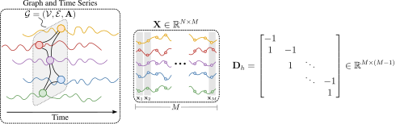
\(\mathbf{X}\mathbf{D}_h\) looks like a technicality. It is not: it is the single modeling assumption that makes reconstruction work, and Section 4 measures why.
2.1 The two problems
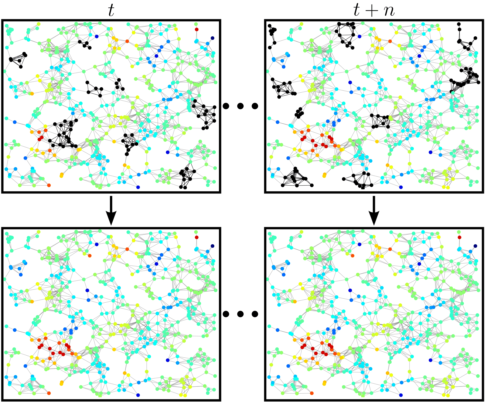
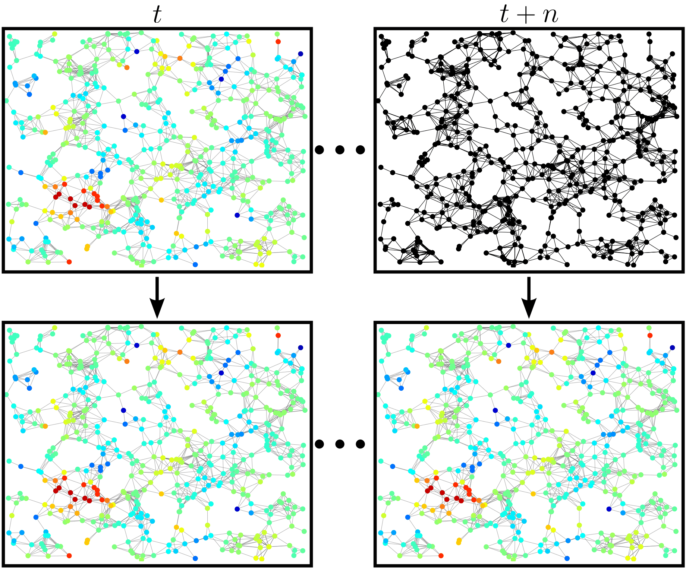
Check 1 — Which is which?
Both problems produce missing values, and it is worth being precise about the difference. In reconstruction the missing entries are interior: we know values before and after them, at the same node and at neighboring nodes, and we interpolate. In forecasting the missing entries are at the boundary: everything we know lies in the past, and we extrapolate.
Interpolation can lean on smoothness in both directions. Extrapolation cannot, which is why the two get different machinery.
3 Spectral GNNs
Lecture 2 defined a graph filter as a polynomial in the shift operator, \(\mathbf{z}=\sum_{k}h_k\mathbf{S}^{k}\mathbf{x}\), and worked entirely in the vertex domain. There is a second description, and for spatiotemporal problems it earns its keep: in practice spectral GNNs often outperform plain message passing on these tasks.
3.1 From Fourier to graph Fourier
The classical Fourier transform decomposes a signal into sinusoids of increasing frequency, and the inverse transform reassembles it.
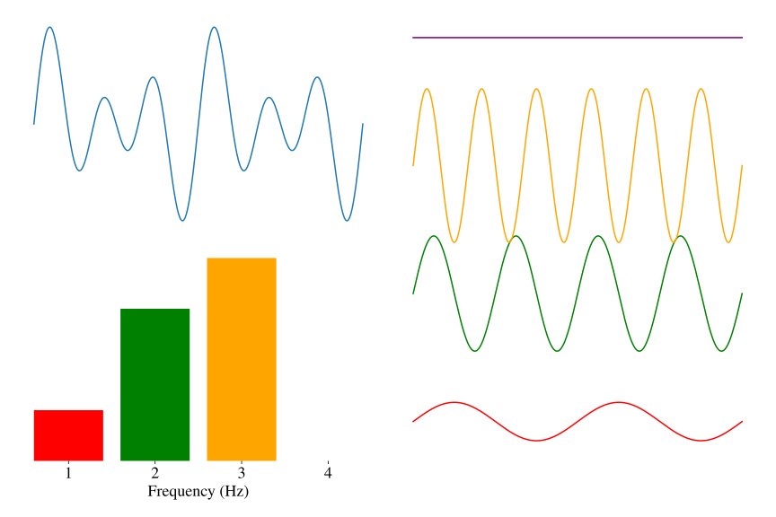
The graph Fourier transform is the same idea with the sinusoids replaced by the eigenvectors of the shift operator.
Definition 3 — Graph Fourier transform
Let \(\mathbf{S}\) be diagonalizable, \(\mathbf{S}=\mathbf{U}\boldsymbol{\Lambda}\mathbf{U}^{-1}\). The eigenvectors \(\mathbf{u}_i\) form a basis of \(\mathbb{R}^{N}\), so any graph signal can be written as
\[ \mathbf{x}=\mathbf{U}\hat{\mathbf{x}}, \qquad \hat{\mathbf{x}}=\mathbf{U}^{-1}\mathbf{x}, \]
where \(\hat{\mathbf{x}}\) is the graph Fourier transform (GFT) of \(\mathbf{x}\).
For an undirected graph \(\mathbf{S}\) is symmetric, so \(\mathbf{U}\) is orthogonal, \(\mathbf{U}^{\top}\mathbf{U}=\mathbf{U}\mathbf{U}^{\top}=\mathbf{I}\), and the pair simplifies to \(\mathbf{x}=\mathbf{U}\hat{\mathbf{x}}\), \(\hat{\mathbf{x}}=\mathbf{U}^{\top}\mathbf{x}\).
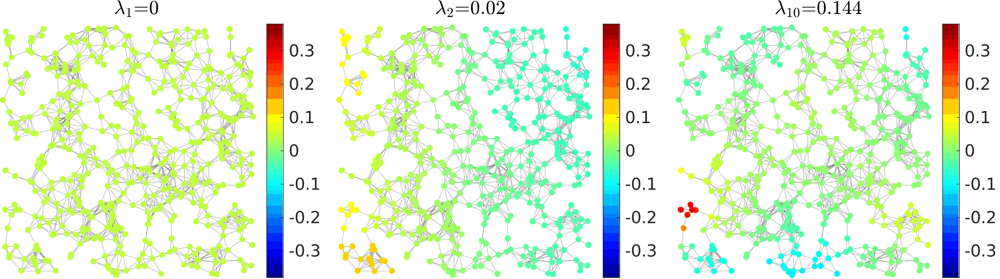
Because \(\mathbf{U}\) is orthogonal, \(\hat{x}(i)=\langle\mathbf{u}_i,\mathbf{x}\rangle\): the \(i\)-th GFT coefficient measures how similar \(\mathbf{x}\) is to the \(i\)-th eigenvector. A signal whose energy sits in the first few coefficients is smooth — it barely changes across edges. A signal spread across the spectrum is rough.
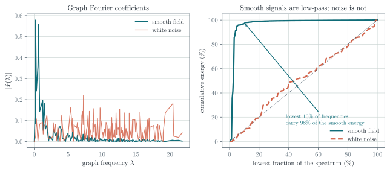
3.2 Filters in the frequency domain
Definition 4 — Graph filters in the spectral domain
Any graph filter defined as a polynomial in \(\mathbf{S}\) can be written
\[ \mathbf{H}=h(\mathbf{S})=\sum_{i=0}^{k}h_i\mathbf{S}^{i}=\mathbf{U}\,h(\boldsymbol{\Lambda})\,\mathbf{U}^{-1}, \]
where \(h(\boldsymbol{\Lambda})\) is diagonal with entries \(h(\lambda_j)=\sum_{i=0}^{k}h_i\lambda_j^{i}\) (Ortega 2022).
The proof is one line: \(\mathbf{S}^{i}=\mathbf{U}\boldsymbol{\Lambda}^{i}\mathbf{U}^{-1}\) because the inner \(\mathbf{U}^{-1}\mathbf{U}\) factors cancel; summing over \(i\) gives the result.
So filtering can be done in three steps: transform, multiply, transform back.
\[ \hat{\mathbf{x}}=\mathbf{U}^{-1}\mathbf{x}, \qquad \hat{\mathbf{y}}=h(\boldsymbol{\Lambda})\hat{\mathbf{x}}, \qquad \mathbf{y}=\mathbf{U}\hat{\mathbf{y}}. \]
This is appealing: no matrix powers, no sequential recursion, and complete freedom over the response \(h(\lambda)\) — it need not be a low-pass filter, which is exactly the limitation Lecture 2 identified in GCN.
Check 2 — The trade-off between spectral and spatial
The catch is \(\mathbf{U}\). Obtaining it requires an eigendecomposition, costing \(O(N^{3})\), and \(\mathbf{U}\) is dense even when \(\mathbf{S}\) is sparse. Compare with the vertex domain, where a \(K\)-tap filter costs \(O(K|\mathcal{E}|)\) and touches only \(K\)-hop neighborhoods.
So the spectral view is a modeling tool for small and medium graphs, and an analysis tool for large ones. It is also not transferable: \(\mathbf{U}\) belongs to one graph, so a model defined directly on \(\boldsymbol{\Lambda}\) is not inductive.
3.3 Chebyshev graph convolutions
The way to keep the spectral expressiveness without paying \(O(N^{3})\) is to approximate the response \(h(\lambda)\) by a polynomial — which returns us to the vertex domain, where polynomials in \(\mathbf{S}\) are sparse products. ChebConv (Defferrard et al. 2016) does this with the Chebyshev basis, and it is the direct predecessor of GCN.
Definition 5 — ChebConv layer
\[ \mathbf{H}^{(\ell+1)}=\sum_{i=1}^{k}\mathbf{Z}_i\mathbf{W}_i, \]
with
\[ \mathbf{Z}_1=\mathbf{H}^{(\ell)}, \qquad \mathbf{Z}_2=\tilde{\mathbf{L}}\mathbf{H}^{(\ell)}, \qquad \mathbf{Z}_i=2\tilde{\mathbf{L}}\mathbf{Z}_{i-1}-\mathbf{Z}_{i-2}, \]
and the rescaled Laplacian \(\tilde{\mathbf{L}}=\dfrac{2\mathbf{L}}{\lambda_N}-\mathbf{I}\).
Two details explain the design. The rescaling maps the spectrum of \(\mathbf{L}\) from \([0,\lambda_N]\) onto \([-1,1]\), which is where the Chebyshev polynomials are defined and where they are numerically well behaved. And the three-term recursion \(T_i(x)=2xT_{i-1}(x)-T_{i-2}(x)\) is exactly the recursion satisfied by \(\mathbf{Z}_i\) — so a degree-\(k\) response costs \(k\) sparse matrix products and no eigendecomposition at all.
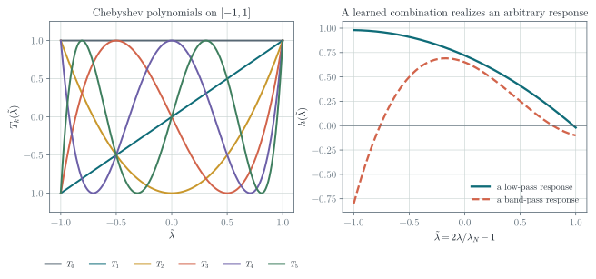
Swapping the polynomial family gives other models: Gegenbauer polynomials yield GegenConv (Castro-Correa et al. 2024), Jacobi polynomials yield JacobiConv (Wang and Zhang 2022).
Check 3 — Spectral GNNs in one paragraph
The GFT diagonalizes graph filters, turning convolution into pointwise multiplication by \(h(\lambda)\) and making “graph frequency” precise. Working on the spectrum directly costs an \(O(N^{3})\) eigendecomposition. ChebConv recovers an arbitrary degree-\(k\) response using only sparse products, through the Chebyshev recursion — and GCN is the special case \(k=1\) with tied coefficients.
4 Reconstruction of time-varying graph signals
Definition 6 — Reconstruction problem
Given \(\mathcal{G}\) and a time-varying signal \(\mathbf{X}\in\mathbb{R}^{N\times M}\) in which the entries indexed by a known set \(\mathcal{S}=\{(i,j)\}\) are missing, and writing \(\mathcal{T}=(\mathcal{V}\times\mathcal{M})\setminus\mathcal{S}\) for the observed entries, recover the values on \(\mathcal{S}\).
That \(\mathcal{S}\) is known matters. We are not detecting outliers; we know exactly which sensors failed and when.
4.1 Measuring smoothness on a graph
Definition 7 — Laplacian quadratic form
\[ \Delta_{\mathbf{L}}(\mathbf{x})=\mathbf{x}^{\top}\mathbf{L}\mathbf{x}=\sum_{i\sim j}a_{ij}(x_i-x_j)^{2}, \]
summing over edges. Each edge contributes in proportion to its weight \(a_{ij}\) and to the squared difference of the signal at its endpoints.
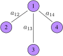
Worked example — Computing \(\mathbf{x}^{\top}\mathbf{L}\mathbf{x}\)
For Figure 8 the only edges are \((1,2)\), \((1,3)\) and \((1,4)\), so
\[ \mathbf{x}^{\top}\mathbf{L}\mathbf{x} =a_{12}(x_1-x_2)^{2}+a_{13}(x_1-x_3)^{2}+a_{14}(x_1-x_4)^{2}. \]
Note what is absent: no term in \((x_3-x_4)\). Nodes 3 and 4 may differ freely at no cost, because they are not adjacent. Variation is measured along edges, not between arbitrary pairs.
Minimum. Take \(x_1=x_2=x_3=x_4=1\). Every difference vanishes, so \(\mathbf{x}^{\top}\mathbf{L}\mathbf{x}=0\). Since \(a_{ij}\geq0\) makes every term nonnegative, this is the global minimum — and it is the constant eigenvector \(\mathbf{u}_1\) with \(\lambda_1=0\) from Figure 5.
Maximum. Maximize the sign changes across edges: \(x_1=1\), \(x_2=x_3=x_4=-1\). Each difference is \(2\), so
\[ \mathbf{x}^{\top}\mathbf{L}\mathbf{x}=4(a_{12}+a_{13}+a_{14}). \]
4.2 From static to time-varying smoothness
The obvious extension sums the quadratic form over time:
\[ E(\mathbf{X})=\sum_{s=1}^{M}\mathbf{x}_s^{\top}\mathbf{L}\mathbf{x}_s=\operatorname{tr}(\mathbf{X}^{\top}\mathbf{L}\mathbf{X}). \]
Qiu et al. (Qiu et al. 2017) observed that on real data this is the wrong quantity. What is smooth on the graph is not the signal but its temporal difference:
\[ E(\mathbf{X}\mathbf{D}_h)=\sum_{s=2}^{M}(\mathbf{x}_s-\mathbf{x}_{s-1})^{\top}\mathbf{L}(\mathbf{x}_s-\mathbf{x}_{s-1}). \]
The intuition is physical. A temperature field can have large spatial gradients — a valley is genuinely colder than a ridge — so \(\mathbf{x}_s\) need not be smooth. But when the sampling rate is high, how much things changed since the last reading varies gently across the network, because neighboring sensors experience the same weather. Nature rarely moves abruptly, and even more rarely does so at one node and not its neighbor.
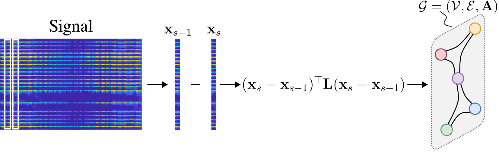
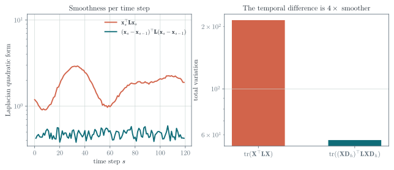
4.3 The optimization problem
We need an error term as well. Let \(\mathbf{J}\in\{0,1\}^{N\times M}\) be the sampling matrix, with \(J_{ij}=1\) when the value at node \(i\) and time \(j\) is observed, let \(\tilde{\mathbf{X}}\) be the matrix to recover, and \(\mathbf{Y}\) the observations. Then \(\|\mathbf{J}\circ\tilde{\mathbf{X}}-\mathbf{Y}\|_F^2\) penalizes disagreement on the observed entries only — the Hadamard product simply ignores everything else.
Definition 8 — Time-varying graph signal reconstruction (TGSR)
\[ \min_{\tilde{\mathbf{X}}}\ \frac{1}{2}\left\|\mathbf{J}\circ\tilde{\mathbf{X}}-\mathbf{Y}\right\|_F^{2} +\frac{\upsilon}{2}\operatorname{tr}\!\left((\tilde{\mathbf{X}}\mathbf{D}_h)^{\top}\mathbf{L}\,\tilde{\mathbf{X}}\mathbf{D}_h\right). \tag{1}\]
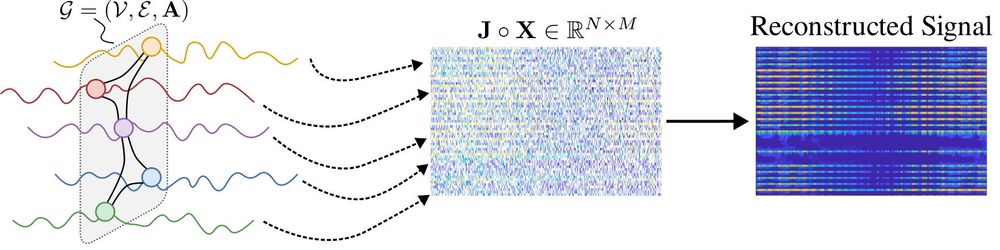
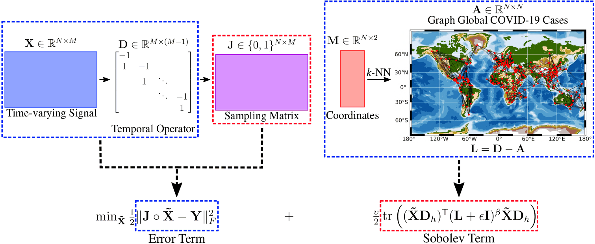
4.4 Solving it
Equation 1 is a convex quadratic, so it has a closed-form solution — which requires inverting an \(MN\times MN\) matrix. For \(N=1000\) sensors over \(M=500\) time steps that is a \(500\,000\times500\,000\) inverse. Not a good idea.
Use gradient descent instead. Writing \(f_u(\tilde{\mathbf{X}})\) for the objective,
\[ \nabla_{\tilde{\mathbf{X}}}f_u(\tilde{\mathbf{X}}) =\mathbf{J}\circ\tilde{\mathbf{X}}-\mathbf{Y} +\upsilon\,\mathbf{L}\tilde{\mathbf{X}}\mathbf{D}_h\mathbf{D}_h^{\top}, \]
a formula built entirely from sparse products. The original paper uses conjugate gradient.
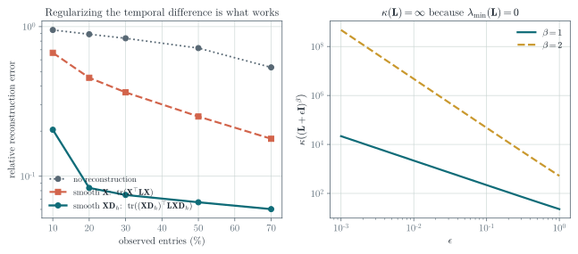
4.5 Sobolev smoothness
Giraldo et al. (Giraldo et al. 2022) observed that Equation 1 is ill-posed in a specific sense, and that this slows convergence.
Check 4 — Why \(\mathbf{L}\) conditions the problem badly
The condition number of a square matrix,
\[ \kappa(\mathbf{L})=\frac{|\lambda_{\max}(\mathbf{L})|}{|\lambda_{\min}(\mathbf{L})|}, \]
measures how well-behaved its inversion is, and small condition numbers are associated with fast convergence of gradient methods. For a graph Laplacian \(\lambda_{\min}(\mathbf{L})=0\) always — the constant eigenvector — so
\[ \kappa(\mathbf{L})=\infty . \]
The regularizer supplies no curvature at all along the constant direction.
The fix is to regularize the regularizer:
\[ \min_{\tilde{\mathbf{X}}}\ \frac{1}{2}\left\|\mathbf{J}\circ\tilde{\mathbf{X}}-\mathbf{Y}\right\|_F^{2} +\frac{\upsilon}{2}\operatorname{tr}\!\left((\tilde{\mathbf{X}}\mathbf{D}_h)^{\top}(\mathbf{L}+\epsilon\mathbf{I})^{\beta}\,\tilde{\mathbf{X}}\mathbf{D}_h\right), \tag{2}\]
adding a positive definite \(\epsilon\mathbf{I}\) so that every eigenvalue is bounded away from zero. This is called Sobolev smoothness, after its relationship to the Sobolev norm for static graph signals. The right panel of Figure 13 plots \(\kappa\big((\mathbf{L}+\epsilon\mathbf{I})^{\beta}\big)\) against \(\epsilon\): finite everywhere, and tunable through \(\epsilon\) and \(\beta\).
The algorithm changes in exactly one place, the gradient:
\[ \nabla_{\tilde{\mathbf{X}}}f_u(\tilde{\mathbf{X}}) =\mathbf{J}\circ\tilde{\mathbf{X}}-\mathbf{Y} +\upsilon\,(\mathbf{L}+\epsilon\mathbf{I})^{\beta}\tilde{\mathbf{X}}\mathbf{D}_h\mathbf{D}_h^{\top}. \]
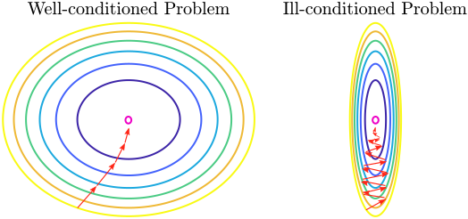
Check 5 — What is and is not shown here
Figure 13 establishes two things directly: the temporal-difference prior is dramatically better than the static one, and \(\kappa(\mathbf{L}+\epsilon\mathbf{I})^{\beta}\) is finite while \(\kappa(\mathbf{L})\) is not.
It does not show a convergence speed-up from the Sobolev term. On this small synthetic problem the data term already supplies curvature in the directions that matter, so the two objectives descend at nearly the same rate. The empirical advantage reported in (Giraldo et al. 2022) is measured on real datasets, and you should read the paper rather than take it from a 220-node simulation. Reproducing it — or failing to — is Exercise 6.
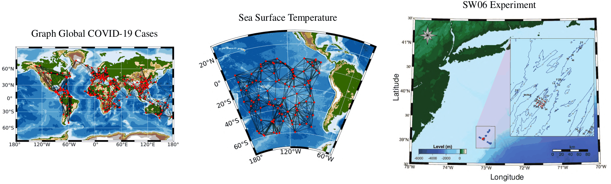
4.6 Reconstruction with a neural network
The same problem can be solved by learning. Feed the Laplacian and the incomplete signal to a GNN with an autoencoder shape, and train it with a loss that is the previous objective in disguise.
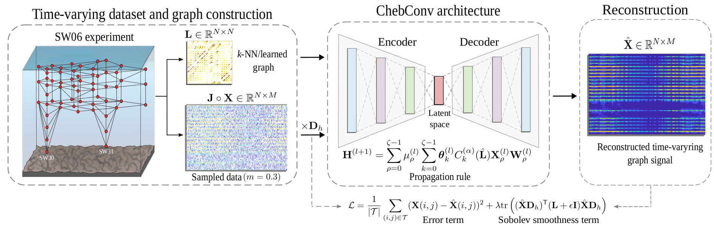
Each layer is a cascade of Chebyshev convolutions of increasing order \(\rho=0,\dots,\zeta-1\), combined linearly.
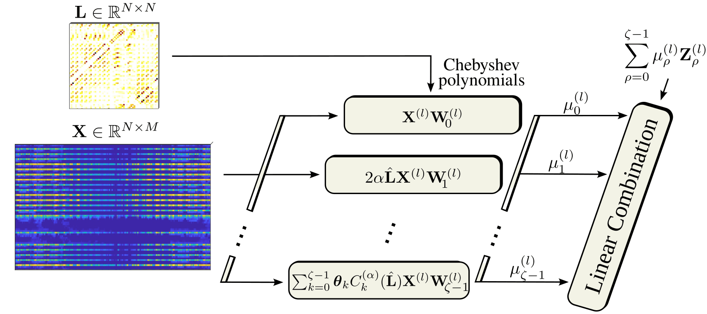
\[ \mathbf{X}^{(\ell+1)}=\sum_{\rho=0}^{\zeta-1}\mu_{\rho}^{(\ell)}\mathbf{Z}_{\rho}^{(\ell)}\in\mathbb{R}^{N\times F_\ell}, \]
where \(\mathbf{Z}_{\rho}^{(\ell)}\in\mathbb{R}^{N\times F_\ell}\) is branch \(\rho\)’s output and the \(\mu_{\rho}^{(\ell)}\) are trainable. The number of branches \(\zeta\) is a hyperparameter.
Worked example — Shapes through the autoencoder
The input is the whole time-varying signal, \(\mathbf{X}^{(0)}\in\mathbb{R}^{N\times M}\): each node’s feature vector is its time series, so the feature dimension is \(M\).
The first layer’s weights are \(\mathbf{W}_{\rho}^{(0)}\in\mathbb{R}^{M\times F_0}\) for every branch \(\rho\), with \(F_0<M\) — the encoder compresses. Widths keep shrinking to the latent layer, then grow back, and the last layer uses \(\mathbf{W}_{\rho}^{(\ell)}\in\mathbb{R}^{F_\ell\times M}\) so the output is again \(N\times M\).
These networks are shallow in practice. The reason is Lecture 2’s: over-smoothing. Depth here buys receptive field on the graph, and pays for it in discriminative power.
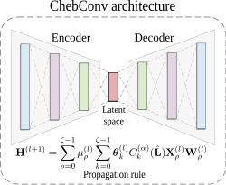
The loss is the optimization objective, rewritten for training:
\[ \mathcal{L}=\frac{1}{|\mathcal{T}|}\sum_{(i,j)\in\mathcal{T}}\left(X_{ij}-\tilde{X}_{ij}\right)^{2} +\lambda\operatorname{tr}\!\left((\tilde{\mathbf{X}}\mathbf{D}_h)^{\top}(\mathbf{L}+\epsilon\mathbf{I})\,\tilde{\mathbf{X}}\mathbf{D}_h\right). \]
An MSE term on the observed entries plus the Sobolev term from Equation 2. Train it with Adam or SGD.
Check 6 — Optimization or network?
They solve the same problem with the same prior, and the difference is where the effort goes.
The optimization approach has no training data, no training phase, and few hyperparameters (\(\upsilon\), \(\epsilon\), \(\beta\)); it needs a bespoke solver, and it starts from scratch on every new signal.
The network approach reuses a standard optimizer and amortizes the cost across signals once trained; but hyperparameter tuning is harder, and it needs data to train on.
5 Forecasting of time-varying graph signals
Definition 9 — Forecasting problem
Given \(\mathcal{G}\), a time-varying graph signal \(\mathbf{X}\in\mathbb{R}^{N\times M}\), and a temporal window
\[ \mathbf{X}_K=[\mathbf{x}_{m-K},\ldots,\mathbf{x}_{m-1}]\in\mathbb{R}^{N\times K}, \qquad K<M, \]
predict \(\mathbf{x}_m\). \(K\) is the auto-regressive order.
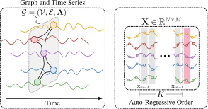
5.1 Auto-regressive modeling
The classical AR(\(K\)) model for a scalar time series is
\[ x_m=\sum_{i=1}^{K}\phi_i x_{m-i}+\epsilon_m, \]
a weighted sum of the last \(K\) lags plus white noise. The order \(K\) sets how much history is retained, the coefficients \(\phi_i\) weight it — typically decaying with distance in time — and \(\epsilon_m\) absorbs whatever the model cannot explain.
On a graph, the scalar coefficients become matrices:
\[ \mathbf{x}_m=\sum_{i=1}^{K}\boldsymbol{\Phi}_i\mathbf{x}_{m-i}+\boldsymbol{\epsilon}_m, \qquad \boldsymbol{\Phi}_i\in\mathbb{R}^{N\times N}. \]
Leaving \(\boldsymbol{\Phi}_i\) arbitrary would be hopeless — \(KN^{2}\) parameters, and no locality. But we know from Lecture 2 what a well-behaved \(N\times N\) operator on a graph looks like: a graph filter. Take \(\boldsymbol{\Phi}_i=\sum_{j=0}^{p}h_{j,i}\mathbf{S}^{j}\) and the model becomes
\[ \mathbf{x}_m=\sum_{i=1}^{K}\sum_{j=0}^{p}h_{j,i}\mathbf{S}^{j}\mathbf{x}_{m-i}+\boldsymbol{\epsilon}_m, \tag{3}\]
with \((p+1)K\) parameters regardless of \(N\). Reading it off: the value at a node at time \(m\) depends on its own past \(K\) values and on the past values of its \(p\)-hop neighborhood. Setting \(p=1\) gives the simplest useful case, \(\mathbf{x}_m=\sum_i(h_{0,i}\mathbf{I}+h_{1,i}\mathbf{S})\mathbf{x}_{m-i}+\boldsymbol{\epsilon}_m\) — each node’s own history plus its immediate neighbors’.
Check 7 — Two axes, not one
An ordinary time series has one axis of dependence: the past. A spatiotemporal graph signal has two, and Equation 3 has one index for each — \(i\) runs over time lags and \(j\) over graph hops. Traffic at an intersection depends on that intersection an hour ago and on the upstream intersections a few minutes ago.
5.2 Forecasting with GNNs
Add nonlinearities to Equation 3 and it becomes a network:
\[ \tilde{\mathbf{x}}_m=\sum_{i=1}^{K}\alpha_i\,\sigma\!\left(\sum_{j=0}^{p}h_{j,i}\mathbf{S}^{j}\mathbf{x}_{m-i}\right), \tag{4}\]
where each lag is filtered on the graph, passed through \(\sigma\), and the \(K\) results are combined with learnable weights \(\alpha_i\).
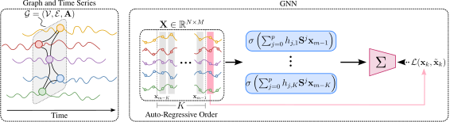
The loss is mean squared error over the nodes,
\[ \mathcal{L}_{\mathrm{MSE}}(\mathbf{x}_m,\tilde{\mathbf{x}}_m) =\frac{1}{N}\sum_{i=1}^{N}\left(x_m(i)-\tilde{x}_m(i)\right)^{2}, \]
and training is ordinary SGD or Adam.
5.3 Multiple horizons
Predicting \(H\) steps ahead rather than one admits two designs.
MLP head. Produce all \(H\) horizons in one forward pass by projecting the shared representation:
\[ \tilde{\mathbf{X}}_m=\sigma\!\left(\left[\sum_{i=1}^{K}\alpha_i\sigma\!\left(\sum_{j=0}^{p}h_{j,i}\mathbf{S}^{j}\mathbf{x}_{m-i}\right)\right]\mathbf{w}_h^{\top}\right) \in\mathbb{R}^{N\times H}, \]
with \(\mathbf{w}_h\in\mathbb{R}^{H\times1}\) learnable, and MSE taken between the matrices \(\tilde{\mathbf{X}}_m\) and \(\mathbf{X}_m\).
Recursive. Feed the model’s own prediction back in. Writing \(\texttt{GNN}_{\mathcal{G},\boldsymbol{\theta}}(\cdot)\) for Equation 4,
\[ \tilde{\mathbf{x}}_m=\texttt{GNN}_{\mathcal{G},\boldsymbol{\theta}}(\mathbf{x}_{m-1},\ldots,\mathbf{x}_{m-K}), \qquad \tilde{\mathbf{x}}_{m+1}=\texttt{GNN}_{\mathcal{G},\boldsymbol{\theta}}(\tilde{\mathbf{x}}_m,\mathbf{x}_{m-1},\ldots,\mathbf{x}_{m-K+1}), \]
and so on for \(H-1\) steps, assembling \(\tilde{\mathbf{X}}_m\in\mathbb{R}^{N\times H}\).
Check 8 — Two things to notice about the recursion
- The window shifts. Each step drops the oldest true observation and prepends the newest prediction, so the input stays \(K\) wide and grows progressively more synthetic.
- The parameters are shared. The same \(\boldsymbol{\theta}\) is used at every horizon — one model, applied \(H\) times, not \(H\) models.
The recursive formulation works better in practice. It also compounds its own errors, which is why forecast accuracy degrades with the horizon.
5.4 GraphCast
The clearest large-scale demonstration is GraphCast (Lam et al. 2023), DeepMind’s medium-range weather model.
- It forecasts up to 10 days ahead, learning from historical reanalysis data instead of integrating the equations of motion numerically.
- The atmosphere is represented as a global multi-mesh graph built on hierarchical icosahedral meshes, not a latitude–longitude grid — which avoids the pole distortion a regular grid suffers.
- Message passing across mesh resolutions propagates information locally and globally in the same forward pass.
- It is auto-regressive, exactly as above: each output state is computed from previous states plus multi-resolution message passing.
- It produces a 10-day forecast in under a minute on one TPU, against roughly an hour for traditional numerical weather prediction.
GraphCast has a good deal of additional machinery. The part that matters here is that its skeleton is Equation 4.
Traffic forecasting is the other standard benchmark family: MetrLA (four months of speeds on 207 Los Angeles County highway sensors at 5-minute resolution) and PemsBay (six months at 325 Bay Area stations, also 5-minute).
6 Exercises
6.1 Exercise 1 — Reading the GFT
Take the path graph on 6 nodes. Compute \(\mathbf{L}\), its eigenvalues and eigenvectors, and verify that the eigenvector for \(\lambda_1=0\) is constant and that the number of sign changes grows with \(\lambda\).
6.2 Exercise 2 — Quadratic form
For Figure 8 with \(a_{12}=2\), \(a_{13}=1\), \(a_{14}=1\) and \(\mathbf{x}=[1,0,-1,2]^{\top}\), compute \(\mathbf{x}^{\top}\mathbf{L}\mathbf{x}\) directly from the edge sum, then again as a matrix product, and confirm they agree.
6.3 Exercise 3 — Why the difference is smoother
Let each node carry \(x_s(i)=f(i)+g(s)\): a fixed spatial pattern plus a spatially uniform temporal drift. Show that \(\mathbf{x}_s^{\top}\mathbf{L}\mathbf{x}_s\) is generally nonzero while \((\mathbf{x}_s-\mathbf{x}_{s-1})^{\top}\mathbf{L}(\mathbf{x}_s-\mathbf{x}_{s-1})=0\) exactly. Relate this to Figure 10.
6.4 Exercise 4 — The gradient
Derive \(\nabla_{\tilde{\mathbf{X}}}f_u\) for Equation 1. You will need \(\nabla_{\mathbf{Z}}\operatorname{tr}(\mathbf{Z}^{\top}\mathbf{A}\mathbf{Z})=2\mathbf{A}\mathbf{Z}\) for symmetric \(\mathbf{A}\), and the chain rule through \(\mathbf{Z}=\tilde{\mathbf{X}}\mathbf{D}_h\).
6.5 Exercise 5 — Chebyshev recursion
Verify that \(\mathbf{Z}_i=2\tilde{\mathbf{L}}\mathbf{Z}_{i-1}-\mathbf{Z}_{i-2}\) implements \(T_i(\tilde{\mathbf{L}})\mathbf{H}^{(\ell)}\), and explain why \(\tilde{\mathbf{L}}=2\mathbf{L}/\lambda_N-\mathbf{I}\) rather than \(\mathbf{L}\) itself.
6.6 Exercise 6 — Does the Sobolev term speed things up?
Using scripts/figures/lecture_04_figures.py, run gradient descent on Equation 1 and on Equation 2 from the same start, and plot the error against iteration. Try to find a regime — sparser sampling, larger \(\upsilon\), larger \(\epsilon\) or \(\beta\) — in which the Sobolev version converges measurably faster. If you cannot, say what that tells you about which term controls the conditioning of this particular problem, and read (Giraldo et al. 2022) for the setting where the effect is visible.
6.7 Exercise 7 — Parameter count
For Equation 3 with \(N=10^{4}\) nodes, order \(K=12\) and \(p=3\) hops, count the parameters. Compare with an unconstrained \(\boldsymbol{\Phi}_i\in\mathbb{R}^{N\times N}\), and with an LSTM run independently at each node with hidden size 64.
6.8 Exercise 8 — Horizons
Explain why the recursive formulation compounds errors while the MLP head does not, and why the recursive one is nonetheless usually more accurate.
7 Main takeaways
- A time-varying graph signal \(\mathbf{X}\in\mathbb{R}^{N\times M}\) carries a time series at every node; the temporal difference \(\mathbf{X}\mathbf{D}_h\) is the object most of the modeling acts on.
- The GFT diagonalizes graph filters and makes “graph frequency” precise: the eigenvalue is the frequency, and smooth signals concentrate their energy at the low end.
- Working on the spectrum costs \(O(N^{3})\) and is not inductive. ChebConv buys an arbitrary degree-\(k\) response with sparse products only, and GCN is its \(k=1\) special case.
- Reconstruction is an error term on the observed entries plus a smoothness regularizer, and the regularizer belongs on \(\mathbf{X}\mathbf{D}_h\) — a choice worth several factors of accuracy.
- \(\kappa(\mathbf{L})=\infty\) because \(\lambda_{\min}(\mathbf{L})=0\). Sobolev smoothness replaces \(\mathbf{L}\) with \((\mathbf{L}+\epsilon\mathbf{I})^{\beta}\) and makes the conditioning finite and tunable.
- The same problem solves with a Chebyshev autoencoder and the same loss. Optimization needs no data; the network amortizes across signals. Both are shallow, for the usual reason.
- Forecasting is auto-regressive modeling where the AR coefficients become graph filters, giving dependence on both past time steps and nearby nodes with a parameter count independent of \(N\).
- Multiple horizons come from an MLP head or a recursive rollout with shared parameters; the recursive version usually wins. GraphCast is this recipe at planetary scale.
References and provenance
This web note is adapted from the Lecture 4 slides by Jhony H. Giraldo. The graph-filter diagonalization is proved, the shapes of the autoencoder are worked through, the auto-regressive model is derived from the classical AR(\(K\)) model, and the smoothness and conditioning claims are checked numerically.
The diagrams reproduce the original course vectors. Figure 6, Figure 10, Figure 13, and Figure 7 are new and were computed with numpy and networkx; the script that produces them is scripts/figures/lecture_04_figures.py in this repository. Figure 4 is a redrawn version of the lecture’s Fourier recap.